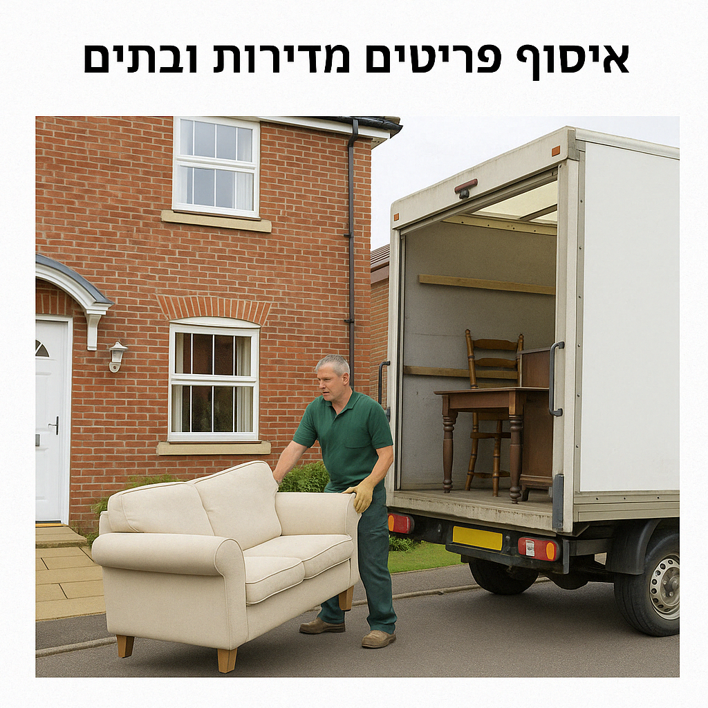
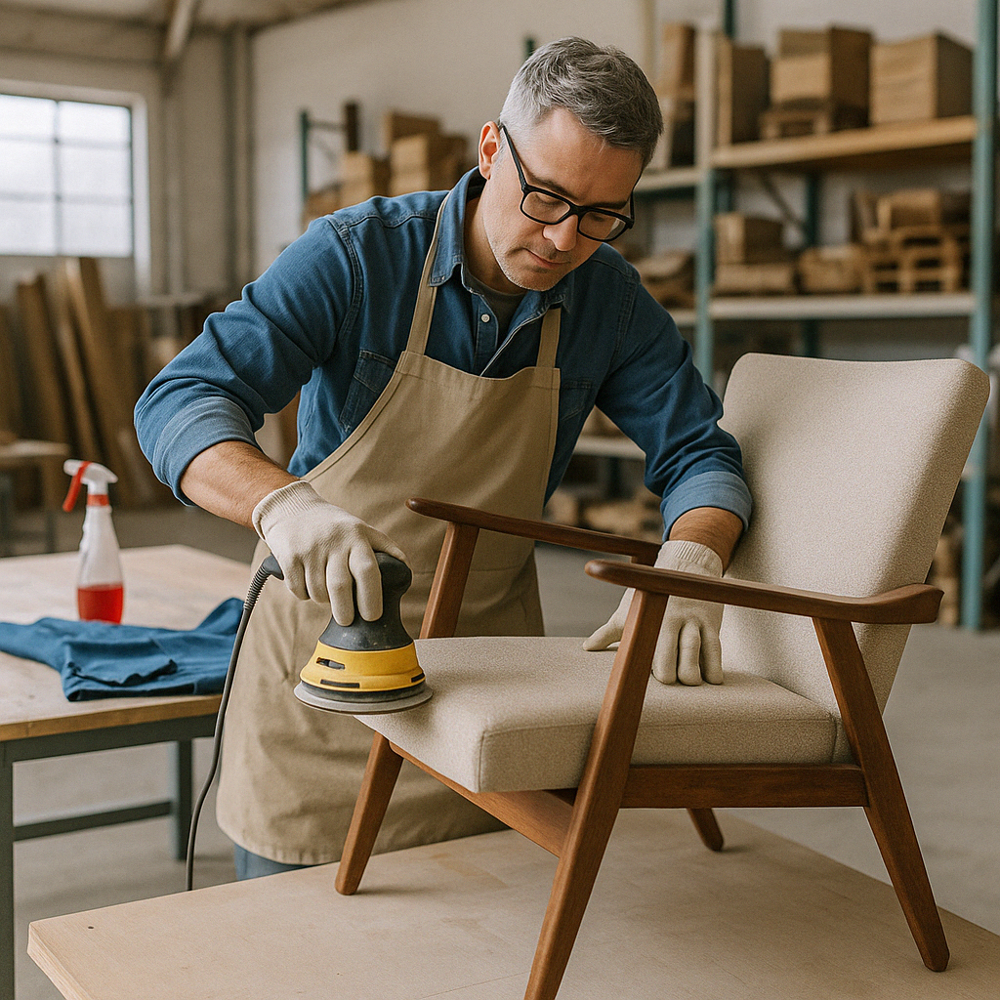

השלבים שלנו – מהאיסוף ועד למסירה

איסוף
אוספים רהיטים איכותיים מדירות, עסקים ואתרי פינוי בינוי.

מיון
ממיינים את הפריטים – שימוש חוזר, תיקון או מיחזור.

שיפוץ
הרהיטים עוברים תיקון, שיוף, חיזוק וצביעה מחדש.

מכירה / תרומה
המוצרים נמכרים או נתרמים לקהילה .